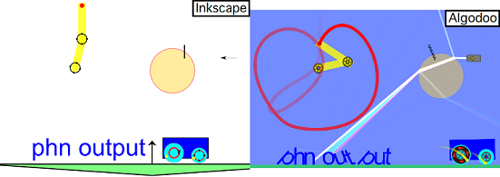

日本語(Japanese), English
【α版として公開中】
最新版ダウンロード: phn_output_v0.1.0 (zipファイル)
Inkscapeで、SVGファイルを出力する代わりにphnファイルを出力します。
SVGで作成した図形の形状をPhunやAlgodooで使用したい時にご利用ください。
詳細は 仕様 (暫定版) を御覧ください。
| 使用例 |
|---|
|  |
更新履歴 を御覧ください。
Copyright (C) tatt61880 (たっと) ---- Twitterアカウント @tatt61880